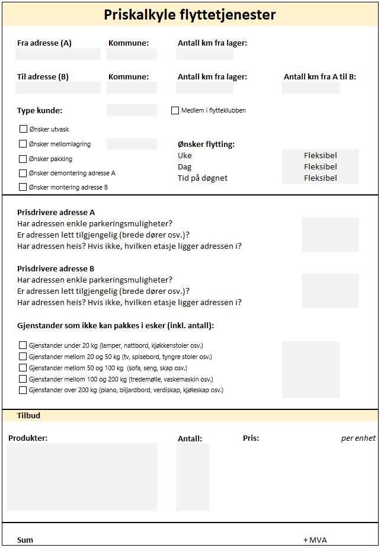
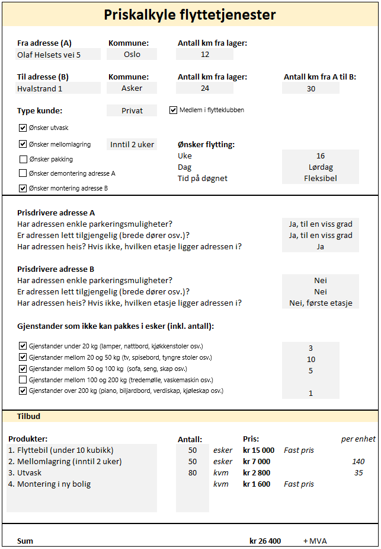

Priskalkyle
Introduksjon
For tidligere arbeidsgiver laget jeg en priskalkyle som kunne erstatte manuell prising av såkalte vintertjenester som brøyting og strøing (for privatmarkedet). I dette eksempelet har jeg endret noen variabler og laget en kalkyle for "flyttetjenester", altså tjenestene et flyttebyrå kan levere. Å prise slike adressebaserte tjenester gjøres ofte manuelt, noe som tar tid og krever ansatte med mye erfaring og innsikt. Tanken bak kalkylen var dermed å forenkle den prosessen, og gjøre det enklere å følge en felles prisstrategi som dessuten ga et dokumenterbart prisgrunnlag. Bildet nederst til venstre på denne siden viser en tom kalkyle, mens bildet nederst til høyre viser kalkylen med eksempel-input.
Kalkylen
Priskalkylen er også utarbeidet slik at det er enkelt å bruke. Alle plassene som trenger input er markert med grått, og de fleste stedene har jeg brukt ulike excel-funksjoner for å gi brukeren ulike svaralternativer. Kun når alle obligatoriske variablene er fylt ut får brukeren oppgitt veiledende priser for de ulike tjenestene. Begge disse faktorene minimerer dessuten brukerfeil. Den kombinerte inputen som brukeren legger inn kalkuleres til en veiledende pris på tjenesten som output. For dette eksempelet på "flyttetjenester" er det faktorer som kun gir utslag på enkelte tjenester, og noen som påvirker alle tjenestene. Type kunde og om noen er medlem i "flytteklubben" er to slike faktorer. Det samme gjelder når kunden ønsker å flytte på; flytting i helger og på kvelder gir et pristillegg på alle tjenester unntatt mellomlagring. For prisen på flytebilen er det spesielt avstanden mellom adresse A og B og antall esker og andre gjenstander som skal flyttes som danner prisgrunnlaget. En annen faktor som spiller inn er hvor enkelt det er å parkere. Ettersom denne tjenesten inkluderer bærehjelp, vil det også spille inn hvor tilgjengelig adressene er, om det er heis og eventuelt hvilken etasje adressen befinner seg i. For de som ønsker pakking er det spesielt antall esker og gjenstander som danner prisgrunnlaget, mens demontering og montering i ny bolig følger faste priser. For tjenesten mellomlagring er dessuten avstanden til og fra lageret og ønsket lengde på lagring avgjørende.
 